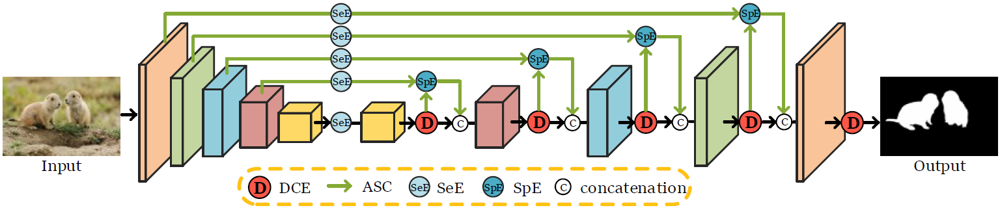
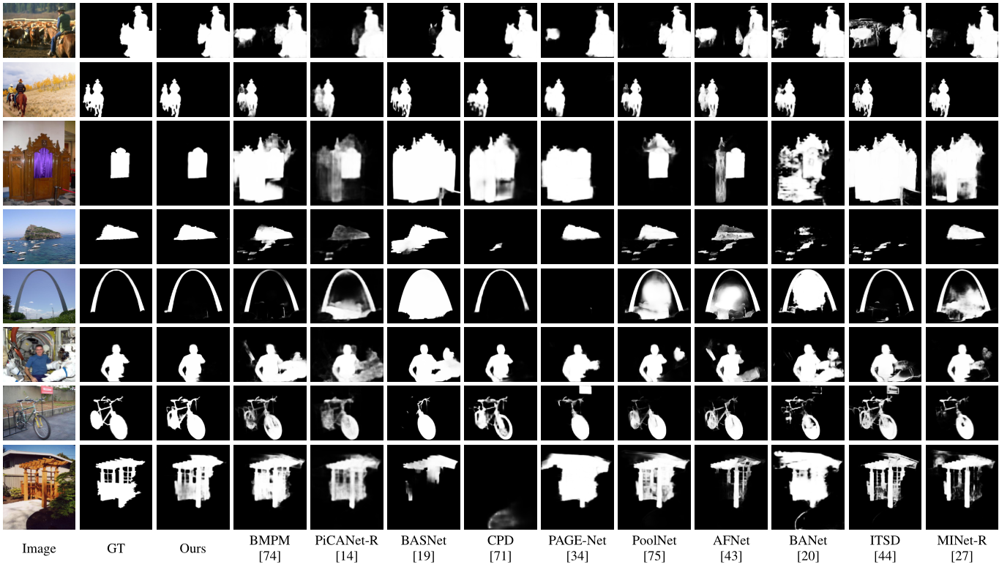

Exploring Dense Context for Salient Object DetectionHaiyang Mei1 Yuanyuan Liu1 Ziqi Wei2,* Dongsheng Zhou3 Xiaopeng Wei1 Qiang Zhang1 Xin Yang1,*1 Dalian University of Technology 2 Tsinghua University 3 Dalian UniversityContact us: xinyang@dlut.edu.cn mhy666@mail.dlut.edu.cn |
|  |
Abstract
Contexts play an important role in salient object detection (SOD). High-level contexts describe the relations between different parts/objects and thus are helpful for discovering the specific locations of salient objects while low-level contexts could provide the fine detail information for delineating the boundary of the salient objects. However, the way of perceiving/leveraging rich contexts has not been fully investigated by existing SOD works. The common context extraction strategies (\emph{e.g.}, leveraging convolutions with large kernels or atrous convolutions with large dilation rates) do not consider the effectiveness and efficiency simultaneously and may cause sub-optimal solutions. In this paper, we devote to exploring an effective and efficient way to learn rich contexts for accurate SOD. Specifically, we first build a dense context exploration (DCE) module to capture dense multi-scale contexts and further leverage the learned contexts to enhance the features discriminability. Then, we embed multiple DCE modules in an encoder-decoder architecture to harvest dense contexts of different levels. Furthermore, we propose an attentive skip-connection to transmit useful features from the encoder part to the decoder part for better dense context exploration. Finally, extensive experiments demonstrate that the proposed method achieves more superior detection results on the six benchmark datasets than 18 state-of-the-art SOD methods.
Visual Results
|  |
Downloads
| Paper | : [ DCENet.pdf ] |
| Experimental Results | : [ Google Drive ] [ Baidu Disk, fetch cod: pdau ] |
| Pre-trained Model | : [ Google Drive ] [ Baidu Disk, fetch cod: vefs ] |
| Source Code | : [ Code ] |
| Datasets | : [ Baidu Disk, fetch cod: jj6n ] |
BibTex